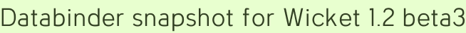

Databinder snapshot for Wicket 1.2 beta3
I didn’t expect to need to make any changes for the new beta, but surprises abound in programming.
Beta 3 doesn’t like the <wicket:feedback /> tag used in DataPage.html. There’s no mention a feedback change in the migration guide so I checked the list of Wicket XML tags to make sure I wasn’t crazy.
Apparently I am crazy, as there is no mention of “feedback” on that page, which hasn’t been edited since September of last year. This is just like in Dark Water, though I can’t imagine who’s trying to “frame” me as insane. Unless… no, surely not.
Framework conspiracy theories aside, the real explanation must be that <wicket:feedback /> was abanoned long ago but kept working, and I just didn’t get the memo. Now the memo has been delivered via Java exception, and the solution was obvious:
<div id="feedback"></div>
Custom feedback tag, you won’t be missed.
Download the Databinder snapshot from the same place as before, and don’t forget to mvn install the new Wicket beta first.
Add a comment